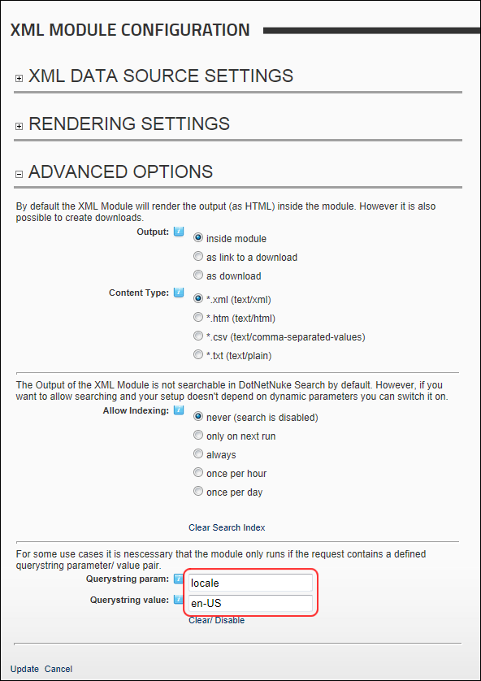

How to set a defined query string parameter/value pair that is required for the XML/XSL module. Setting these options will stop the module executing unless the querystring parameter set in the XML Data Source section matches exactly. You can use this feature for example to only show the content to users in a particular locale by setting the query string parameter Name to locale and the Data origin to User's Locale. Then in the Advanced Options section set Querystring Param to locale and set Querystring Value = en-US, this will then only show the content to users from the US.
